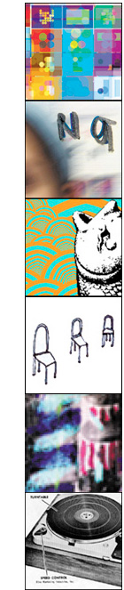

| |
LET US MAKE CARDS
| |
There are quite possibly only two types of people in the world - those who want to have their design printed on an Avant Card and those who don't know what an Avant Card is.
| |
I think it's somehow related to the "I'm gonna show up at the high school reunion in ten years and stun those bullies with my wealth/beauty/charm/clear skin" kinda vibe. Bad news for you if you've been thinking along that track - I just had my ten year reunion and we were all a sorry bunch of sad people in various stages of disarray and decay - bullies and popular people allike! Oh, I've been distracted now...
Where was I - yes, that's right, postcards. We received many many postcards, more than 1000 of them in fact. They we really fun to admire and observe. It was amazingly hard choosing which four to print up as Avant Cards... the decision was made by a group of people from noise and Avant Card along with those who happened to be walking past the room at the time (only kidding!).
We think that they're so kewl that we made a special flash presentation thingy out of them, we printed up pages of the them in the noise program and we've got more of em here online. Next time I reckon we should make a book out of the, y'know one of those glossy numbers with perforations... now that'd be nice.
Enough of my rambling - go and look at cards!
Return to the POSTCARDS Project Homepage
(Psst... we reckon you'll also be interested in the ONLINE GALLERY, FLASH ANIMATIONS and E-WORKS Projects)
|
|
|